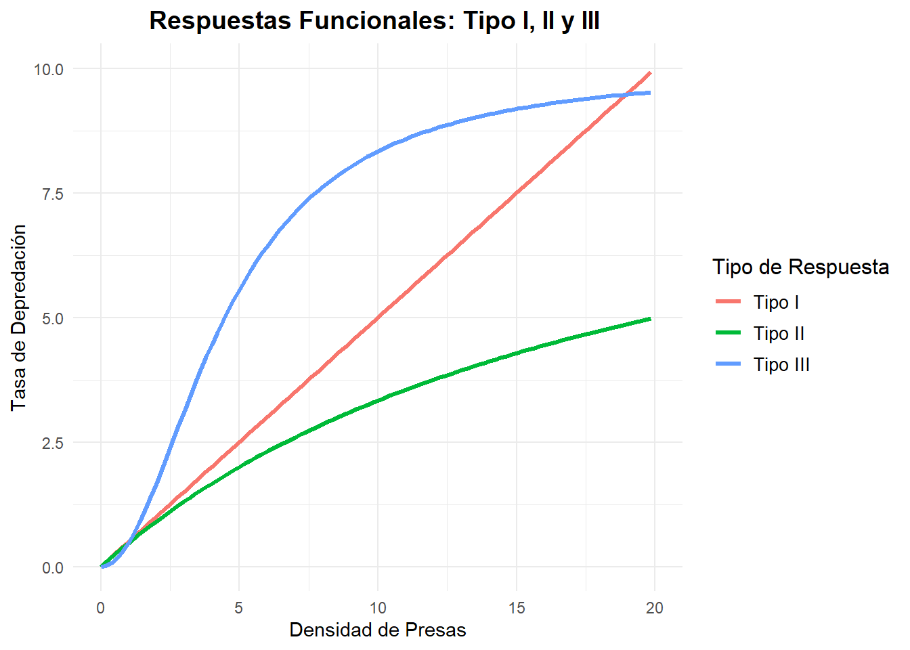
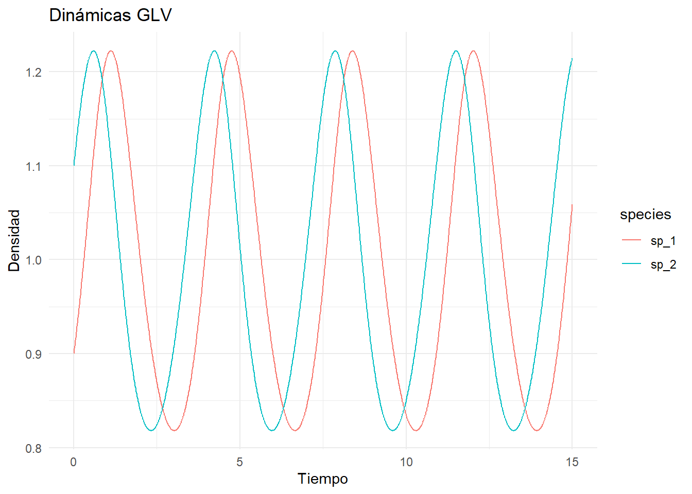

5 Capítulo 5: La relación predador-presa
Las interacciones predador-presa constituyen uno de los pilares fundamentales de la ecología de comunidades. Estas relaciones no solo determinan la estructura y dinámica de las poblaciones involucradas, sino que también impactan de manera profunda en la biodiversidad y en los procesos ecosistémicos. Comprender estas dinámicas es esencial para predecir la estabilidad de los ecosistemas, evaluar estrategias de conservación y gestionar recursos naturales de manera sostenible.
Desde una perspectiva ecológica, la relación predador-presa es una fuerza motriz en la regulación de poblaciones, en la configuración de redes tróficas y en la promoción de la diversidad biológica. La interacción entre depredadores y presas genera patrones que afectan tanto a las comunidades locales como a las dinámicas de ecosistemas a escala global. Por ejemplo, los depredadores pueden actuar como controladores naturales de especies que, sin ellos, alcanzarían niveles de abundancia capaces de generar efectos negativos en el ambiente. De igual forma, las presas, al ser reguladas, influyen en la disponibilidad de recursos en niveles tróficos inferiores, creando un balance dinámico que es clave para la estabilidad del ecosistema.
Históricamente, el estudio de la relación predador-presa ha estado dominado por el modelo clásico de Lotka-Volterra, desarrollado de manera independiente por Alfred Lotka y Vito Volterra a inicios del siglo XX. Este modelo, aunque sencillo, captura las oscilaciones periódicas que emergen cuando depredadores y presas interactúan. Sin embargo, las predicciones de Lotka-Volterra son neutrales y asumen condiciones ideales, por lo que han motivado el desarrollo de extensiones más realistas para capturar la complejidad del mundo natural.
El modelo clásico, a pesar de sus limitaciones, sirvió como punto de partida para innumerables investigaciones que buscaban integrar factores adicionales como la capacidad de carga del ambiente, respuestas funcionales no lineales y los efectos de la densidad poblacional en la dinámica de las interacciones. Estos refinamientos han permitido una mejor comprensión de fenómenos como las cascadas tróficas, las fluctuaciones poblacionales y las condiciones bajo las cuales pueden emerger dinámicas complejas como el caos o los ciclos límite.
5.1 Modelos Clásicos
El modelo clásico de Lotka-Volterra es el punto de partida fundamental para entender las interacciones predador-presa. Este modelo se basa en un sistema de ecuaciones diferenciales que describen las tasas de cambio de las poblaciones de presas (‘x’) y depredadores (‘y’), capturando las oscilaciones generadas por sus interacciones.
5.1.1 Ecuaciones Básicas del Modelo Lotka-Volterra (esto puede repetirse con Cap4)
El modelo presenta las siguientes ecuaciones:
\[ \frac{dx}{dt} = r x - \alpha x y \] \[ \frac{dy}{dt} = \beta x y - \\delta y \]
Donde:
- \(r\): Tasa de crecimiento intrínseco de las presas.
- \(\alpha\): Tasa de captura de presas por los depredadores.
- \(\beta\): Eficiencia de conversión de presas consumidas en biomasa de los depredadores.
- \(\delta\): Tasa de mortalidad de los depredadores.
En este modelo, las presas crecen de forma exponencial a una tasa \(r\) Cuando \(y = 0\), y la población de depredadores decae exponencialmente debido a su tasa de mortalidad \(\delta\).
5.1.2 Análisis de Estabilidad y Oscilaciones Neutrales
El modelo genera oscilaciones periódicas conocidas como “oscilaciones neutrales”. Estas oscilaciones surgen de la retroalimentación entre el crecimiento y declinación de ambas poblaciones. Sin embargo, estas fluctuaciones son neutrales, lo que significa que no convergen a un equilibrio estable ni divergen indefinidamente. Esto ocurre bajo las siguientes condiciones:
- Los depredadores aumentan cuando las presas son abundantes, alcanzando un pico.
- Una alta densidad de depredadores reduce la población de presas, causando una disminución en su abundancia.
- Con menos presas disponibles, los depredadores también comienzan a declinar.
- La reducción de depredadores permite que las presas se recuperen, reiniciando el ciclo.
5.1.3 Análisis Gráfico: Isoclinas y Plano Fase
Una herramienta clave para entender el comportamiento del modelo es el análisis gráfico en el plano fase. En este contexto:
- Isoclinas de crecimiento nulo: Representan las condiciones en las cuales \(dx/dt = 0\) (presas) y \(dy/dt = 0\) (depredadores).
- Para las presas: \(y = r / \\alpha\).
- Para los depredadores: \(x = \\delta / \\beta\).
- Trayectorias poblacionales: Las trayectorias en el plano fase muestran cómo las poblaciones de presas y depredadores evolucionan en el tiempo, describiendo ciclos cerrados alrededor del punto de equilibrio.
Este análisis permite visualizar de manera intuitiva cómo las dinámicas predador-presa generan ciclos y cómo los parámetros del modelo afectan la amplitud y frecuencia de estas oscilaciones.
Veamos el ejemplo en R:
# Instalar y cargar los paquetes necesarios
if (!require("ggplot2")) install.packages("ggplot2", dependencies = TRUE)
if (!require("deSolve")) install.packages("deSolve", dependencies = TRUE)
library(ggplot2)
library(deSolve)
# Definir los parámetros del modelo
parameters <- c(r = 0.5, alpha = 0.02, beta = 0.01, delta = 0.1)
# Definir las isoclinas
isoclinas <- function(x, parameters) {
presa_isoclina <- parameters["r"] / parameters["alpha"] # Línea constante
depredador_isoclina <- parameters["delta"] / parameters["beta"] # Línea constante
list(presa_isoclina = presa_isoclina, depredador_isoclina = depredador_isoclina)
}
# Calcular las isoclinas
isos <- isoclinas(0, parameters)
# Definir el sistema Lotka-Volterra
lotka_volterra <- function(t, state, parameters) {
with(as.list(c(state, parameters)), {
dx <- r * x - alpha * x * y
dy <- beta * x * y - delta * y
list(c(dx, dy))
})
}
# Condiciones iniciales
state <- c(x = 40, y = 10)
# Tiempo de simulación
time <- seq(0, 200, by = 1)
# Resolver el sistema
out <- ode(y = state, times = time, func = lotka_volterra, parms = parameters)
out <- as.data.frame(out)
# Crear la gráfica con ggplot2
ggplot() +
# Trayectorias en el plano fase
geom_path(data = out, aes(x = x, y = y), color = "blue", size = 1) +
# Isoclina de las presas
geom_hline(yintercept = isos$presa_isoclina, color = "red", linetype = "dashed", size = 1) +
# Isoclina de los depredadores
geom_vline(xintercept = isos$depredador_isoclina, color = "green", linetype = "dashed", size = 1) +
labs(
title = "Plano fase con isoclinas de crecimiento nulo",
x = "Población de presas (x)",
y = "Población de depredadores (y)"
) +
theme_minimal()
5.2 Extensiones al Modelo Clásico
El modelo clásico de Lotka-Volterra, aunque es fundamental, no captura muchos aspectos de las interacciones predador-presa observadas en sistemas naturales. Para abordar estas limitaciones, se han desarrollado diversas extensiones que incorporan mayor realismo ecológico:
5.2.1 Crecimiento Logístico de la Presa
En sistemas naturales, el crecimiento de las presas está limitado por la capacidad de carga del ambiente. Esto puede representarse mediante un término de crecimiento logístico:
\[ \frac{dx}{dt} = r x \left(1 - \frac{x}{K}\right) - \alpha x y \]
Donde \(K\) es la capacidad de carga del ambiente. Este término introduce una estabilización natural en el modelo al limitar el crecimiento exponencial de las presas, lo que puede llevar a un equilibrio estable entre presas y depredadores (Turchin, 2003).
5.2.2 Efectos Allee
En algunas poblaciones, las tasas de crecimiento de presas y depredadores dependen de alcanzar un tamaño poblacional mínimo. Este fenómeno, conocido como efecto Allee, puede incorporarse en el modelo mediante términos que reflejen umbrales críticos:
\[ \frac{dx}{dt} = r x \left(\frac{x}{x + A}\right) - \alpha x y \] \[ \frac{dy}{dt} = \beta x y - \delta y \left(\frac{y}{y + B}\right) \]
Donde \(A\) y \(B\) representan los umbrales de densidad para presas y depredadores, respectivamente. Este enfoque es útil para describir sistemas donde las poblaciones pequeñas tienen un mayor riesgo de extinción (Courchamp et al., 1999).
Veamos un ejemplo en R:
# Instalar y cargar paquetes necesarios
if (!require("deSolve")) install.packages("deSolve", dependencies = TRUE)
library(deSolve)
# Definir el modelo con efectos Allee
allee_effect_model <- function(t, state, parameters) {
with(as.list(c(state, parameters)), {
dx <- r * x * ((x / (x + A)) - 1) - alpha * x * y
dy <- beta * x * y - delta * y * ((y / (y + B)) - 1)
list(c(dx, dy))
})
}
# Parámetros del modelo
parameters <- c(
r = 0.5, # Tasa de crecimiento de las presas
A = 10, # Umbral Allee para presas
alpha = 0.02, # Tasa de captura por depredadores
beta = 0.01, # Eficiencia de conversión de depredadores
delta = 0.1, # Tasa de mortalidad de los depredadores
B = 5 # Umbral Allee para depredadores
)
# Condiciones iniciales
state <- c(x = 50, y = 20)
# Tiempo de simulación
time <- seq(0, 200, by = 1)
# Resolver el sistema
out <- ode(y = state, times = time, func = allee_effect_model, parms = parameters)
# Convertir resultados a data frame
out <- as.data.frame(out)
# Graficar resultados
plot(out$time, out$x, type = "l", col = "blue", lwd = 2, ylim = c(0, max(out$x, out$y)),
ylab = "Poblaciones", xlab = "Tiempo")
lines(out$time, out$y, col = "red", lwd = 2)
legend("topright", legend = c("Presas", "Depredadores"), col = c("blue", "red"), lty = 1, lwd = 2,
box.lty = 0)
5.2.3 Respuestas Funcionales de los Depredadores
La forma en que los depredadores responden a los cambios en la densidad de presas puede influir significativamente en las dinámicas del sistema. Las respuestas funcionales tipo II y tipo III de Holling son representaciones comunes:
Tipo I: Tasa de depredación líneal simple, en respuesta a la densidad de presas.
Tipo II: Tasa de depredación que se satura a altos niveles de presas: \[ \frac{dy}{dt} = \beta \frac{x}{1 + h x} y - \delta y \] Donde \(h\) es el tiempo de manejo de cada presa (Holling, 1959).
Tipo III: Tasa de depredación sigmoidea que aumenta a densidades intermedias de presas: \[ \frac{dy}{dt} = \beta \frac{x^2}{1 + h x^2} y - \delta y \]
Estas respuestas permiten modelar comportamientos más complejos, como la búsqueda de presas menos comunes o la saturación en la captura. Ambos tipos de respuestas han sido fundamentales para comprender cómo los depredadores modulan las dinámicas poblacionales en sistemas naturales (Abrams & Ginzburg, 2000).
# Instalar y cargar paquetes necesarios
if (!require("ggplot2")) install.packages("ggplot2", dependencies = TRUE)
library(ggplot2)
# Definir las funciones de las respuestas funcionales
response_type_I <- function(x, alpha) {
alpha * x
}
response_type_II <- function(x, alpha, h) {
(alpha * x) / (1 + h * x)
}
response_type_III <- function(x, alpha, h) {
(alpha * x^2) / (1 + h * x^2)
}
# Parámetros
alpha <- 0.5 # Tasa de captura
beta <- 0.3 # Eficiencia de conversión
h <- 0.05 # tiempo de manejo
x_values <- seq(0, 100, length.out = 500) # Rango de densidad de presas
# Calcular las tasas de depredación ajustadas para cada tipo de respuesta funcional
data <- data.frame(
x = rep(x_values, 3),
depredation_rate = c(
response_type_I(x_values, alpha),
response_type_II(x_values, alpha, h),
response_type_III(x_values, alpha, h)
),
type = rep(c("Tipo I", "Tipo II", "Tipo III"), each = length(x_values))
)
# Graficar los resultados ajustados
ggplot(data, aes(x = x, y = depredation_rate, color = type)) +
geom_line(size = 1.2) +
labs(
title = "Respuestas Funcionales: Tipo I, II y III ",
x = "Densidad de Presas",
y = "Tasa de Depredación",
color = "Tipo de Respuesta",
linetype = "Tipo de Respuesta"
) +
theme_minimal() +
theme(
plot.title = element_text(hjust = 0.5, size = 14, face = "bold"),
legend.title = element_text(size = 12),
legend.text = element_text(size = 10)
) + ylim(c(0,10)) + xlim(c(0,20))
5.3 Dinámicas Complejas
Las interacciones predador-presa no siempre siguen dinámicas predecibles o simples. En muchos sistemas, la incorporación de no linealidades o complejidad adicional en los modelos genera comportamientos más ricos y dinámicos, como ciclos límite y caos.
5.3.1 Introducción de Ciclos Límite
Los ciclos límite son oscilaciones estables que ocurren alrededor de un punto de equilibrio inestable. En el contexto de modelos predador-presa, estos ciclos emergen cuando los efectos estabilizadores, como la capacidad de carga o la saturación de depredación, equilibran las tendencias oscilatorias del sistema. Matemáticamente, pueden visualizarse en sistemas extendidos donde las trayectorias convergen a un ciclo cerrado en el plano fase en lugar de un punto de equilibrio.
Un ejemplo común ocurre cuando se introduce el crecimiento logístico para las presas: \[ \frac{dx}{dt} = r x \left(1 - \frac{x}{K}\right) - \alpha x y \] \[ \frac{dy}{dt} = \beta x y - \delta y \] En este caso, el sistema puede mostrar ciclos límite estables que dependen de los valores de \(r\), \(K\), \(\alpha\), y \(\beta\).
5.3.1.1 Ejemplo en R
# Instalar el paquete si no está instalado
if (!require("deSolve")) install.packages("deSolve", dependencies = TRUE)
# Cargar el paquete
library(deSolve)
# Definir el modelo predador-presa con crecimiento logístico
lotka_volterra <- function(t, state, parameters) {
with(as.list(c(state, parameters)), {
dx <- r * x * (1 - x / K) - alpha * x * y
dy <- beta * x * y - delta * y
list(c(dx, dy))
})
}
# Parámetros del modelo
parameters <- c(r = 0.5, K = 100, alpha = 0.02, beta = 0.01, delta = 0.1)
# Condiciones iniciales
state <- c(x = 40, y = 9)
# Tiempo de simulación
time <- seq(0, 200, by = 0.1)
# Resolver el sistema de ecuaciones
out <- ode(y = state, times = time, func = lotka_volterra, parms = parameters)
# Convertir a data frame para graficar
out <- as.data.frame(out)
# Graficar los resultados
plot(out$time, out$x, type = "l", col = "blue", lwd = 2, ylab = "Poblaciones", xlab = "Tiempo")
lines(out$time, out$y, col = "red", lwd = 2)
legend("topright", legend = c("Presas", "Depredadores"), col = c("blue", "red"), lty = 1, lwd = 2)
5.3.2 Condiciones para la Emergencia de Caos
El caos puede emerger en modelos predador-presa cuando los sistemas exhiben sensibilidad extrema a las condiciones iniciales y comportamientos impredecibles a largo plazo. Esto ocurre frecuentemente en modelos que incorporan:
- Respuestas funcionales no lineales (como las respuestas tipo III).
- Retrasos temporales en las interacciones, por ejemplo, en la reproducción de los depredadores o la regeneración de las presas.
- Altos valores de tasa de crecimiento intrínseca de las presas \(r\).
Por ejemplo, el modelo de May (1976) demostró que la inclusión de retrasos en un sistema simple puede generar comportamientos caóticos. Estos sistemas no lineales son estudiados a menudo mediante herramientas numéricas y análisis de bifurcaciones para identificar los rangos de parámetros donde aparece el caos.
5.4 Sistema Depredador-Presa en R
Transformamos una matriz replicadora para obtener un sistema GLV equivalente. Simulamos:
# Función para el modelo GLV
integrate_GLV <- function(r, A, x0, maxtime = 100, steptime = 0.5) {
library(deSolve)
# Definir el sistema GLV
glv <- function(t, x, parms) {
with(as.list(c(x, parms)), {
dxdt <- x * (r + A %*% x)
list(dxdt)
})
}
# Parámetros y tiempos
times <- seq(0, maxtime, by = steptime)
parms <- list(r = r, A = A)
# Resolver el sistema GLV
out <- ode(y = x0, times = times, func = glv, parms = parms)
# Convertir a un data frame
out <- as.data.frame(out)
colnames(out) <- c("time", paste0("sp_", 1:(ncol(out) - 1)))
# Reestructurar los datos
out_long <- tidyr::pivot_longer(out, cols = -time, names_to = "species", values_to = "density")
return(out_long)
}
#Ejemplo
r <- c(-1, 1)
A <- matrix(c(-1, 2,
-2, 1), 2, 2, byrow = TRUE)
x0 <- c(0.9, 1.1)
glvex <- integrate_GLV(r, A, x0, maxtime = 15, steptime = 0.01)
# Graficar resultados GLV de un modelo Predador-Presa
ggplot(glvex, aes(x = time, y = density, color = species)) +
geom_line() +
ggtitle("Dinámicas GLV") +
xlab("Tiempo") + ylab("Densidad") En este sistema, las especies oscilan alrededor de un equilibrio estable.
5.5 Comparación entre Lotka-Volterra y modelos de Teoría de Juegos
Para entender las diferencias entre los enfoques de Lotka-Volterra y la Teoría de Juegos, simularemos ambos modelos y compararemos sus resultados en términos de dinámicas poblacionales y estrategias óptimas.
La relación entre los modelos de Lotka-Volterra generalizados (GLV) y la Teoría de Juegos se establece a través de las dinámicas replicadoras. Estas dinámicas describen cómo la proporción de individuos que adoptan ciertas estrategias cambia con el tiempo, basándose en su éxito relativo. En el modelo GLV, las interacciones entre especies afectan sus tasas de crecimiento, similar a cómo, en la Teoría de Juegos, el éxito relativo de una estrategia influye en su prevalencia en la población. Asi, las dinámicas replicadoras actúan como un puente conceptual entre la ecología matemática y la Teoría de Juegos evolutiva, proporcionando un marco unificado para analizar cómo las interacciones y competencias afectan la composición y evolución de las poblaciones.
Es importante destacar que, una vez reescaladas correctamente, no solo los equilibrios son equivalentes, sino también las dinámicas.
5.6 Visualización de Dinámicas en GLV (Modelo General de Lotka-Volterra) y RE (Ecuación Replicadora)
Para observar las variaciones de las especies en el tiempo tanto en GLV como en RE, se implementa el siguiente código:
# Dinámicas GLV
integrate_GLV <- function(r, A, x0, maxtime = 100, steptime = 0.5) {
library(deSolve)
# Definir el sistema GLV
glv <- function(t, x, parms) {
with(as.list(c(x, parms)), {
dxdt <- x * (r + A %*% x)
list(dxdt)
})
}
# Parámetros y tiempos
times <- seq(0, maxtime, by = steptime)
parms <- list(r = r, A = A)
# Resolver el sistema GLV
out <- ode(y = x0, times = times, func = glv, parms = parms)
# Convertir a un data frame
out <- as.data.frame(out)
colnames(out) <- c("time", paste0("sp_", 1:(ncol(out) - 1)))
# Reestructurar los datos
out_long <- tidyr::pivot_longer(out, cols = -time, names_to = "species", values_to = "density")
return(out_long)
}
# Ahora con una matriz distinta para comparar con RE:
r <- c(1, 2, 3)
A <- matrix(c(-1, 0.5, 0.1,
-0.7, -2, 0,
-0.3, 0, -5), 3, 3, byrow = TRUE)
x0 <- c(0.1, 3, 1)
glvex <- integrate_GLV(r, A, x0)
# Graficar resultados GLV para comparar con RE
ggplot(glvex, aes(x = time, y = density, color = species)) +
geom_line() +
ggtitle("Dinámica GLV") +
xlab("Tiempo") + ylab("Densidad") +
theme_minimal()
# Dinámicas RE
integrate_RE <- function(Atilde, y0, maxtime = 40, steptime = 0.05) {
library(deSolve)
# Definir el sistema replicador
replicator <- function(t, y, parms) {
with(as.list(c(y, parms)), {
fitness <- Atilde %*% y
mean_fitness <- sum(y * fitness)
dy <- y * (fitness - mean_fitness)
list(dy)
})
}
# Parámetros y tiempos
times <- seq(0, maxtime, by = steptime)
parms <- list(Atilde = Atilde)
# Resolver el sistema replicador
out <- ode(y = y0, times = times, func = replicator, parms = parms)
# Convertir a un data frame
out <- as.data.frame(out)
colnames(out) <- c("time", paste0("sp_", 1:(ncol(out) - 1)))
# Reestructurar los datos para ggplot
out_long <- tidyr::pivot_longer(out, cols = -time, names_to = "species", values_to = "density")
return(out_long)
}
A <- matrix(c(-1, 0.5, 0.1,
-0.7, -2, 0,
-0.3, 0, -5), 3, 3, byrow = TRUE)
Atilde <- matrix(0, 4, 4)
Atilde[1:3, 1:3] <- A
Atilde[1:3, 4] <- r
y0 <- c(x0, 1) # add an extra "species"
y0 <- y0 / sum(y0) # project on the simplex
reex <- integrate_RE(Atilde, y0)
# Graficar resultados RE
ggplot(reex, aes(x = time, y = density, color = species)) +
geom_line() +
ggtitle("Dinámicas RE") +
xlab("Tiempo") + ylab("Densidad") +
theme_minimal() ### Equilibrio en GLV
### Equilibrio en GLV
El equilibrio del modelo GLV se obtiene integrando el sistema hasta el tiempo final:
## # A tibble: 3 x 3
## time species density
## <dbl> <chr> <dbl>
## 1 100 sp_1 1.32
## 2 100 sp_2 0.538
## 3 100 sp_3 0.521| time | species | density |
|---|---|---|
| 100 | sp_1 | 1.3209145 |
| 100 | sp_2 | 0.5376799 |
| 100 | sp_3 | 0.5207451 |
5.6.1 Equilibrio en RE
Recuperamos el equilibrio desde el sistema replicador dividiendo por la densidad de la especie ficticia:
## # A tibble: 4 x 3
## time species density
## <dbl> <chr> <dbl>
## 1 40 sp_1 0.391
## 2 40 sp_2 0.159
## 3 40 sp_3 0.154
## 4 40 sp_4 0.296| time | species | density |
|---|---|---|
| 40 | sp_1 | 0.3908793 |
| 40 | sp_2 | 0.1591076 |
| 40 | sp_3 | 0.1540969 |
| 40 | sp_4 | 0.2959162 |
Ajustando las proporciones:
## # A tibble: 4 x 3
## time species density
## <dbl> <chr> <dbl>
## 1 40 sp_1 1.32
## 2 40 sp_2 0.538
## 3 40 sp_3 0.521
## 4 40 sp_4 1| time | species | density |
|---|---|---|
| 40 | sp_1 | 1.3209123 |
| 40 | sp_2 | 0.5376779 |
| 40 | sp_3 | 0.5207453 |
| 40 | sp_4 | 1.0000000 |
Muy recomendable leer el artículo de Page y Nowwak (2002), que muestra cómo la ecuación replicadora-mutadora y la ecuación de Price rastrean dinámicas evolutivas generales, conectando GLV con dinámicas adaptativas.
5.7 ¿Quieres leer mas?
Abrams, P. A., & Ginzburg, L. R. (2000). The nature of predation: prey dependent, ratio dependent or neither? Trends in Ecology & Evolution, 15(8), 337-341. Courchamp, F., Clutton-Brock, T., & Grenfell, B. (1999). Inverse density dependence and the Allee effect. Trends in Ecology & Evolution, 14(10), 405-410. Holling, C. S. (1959). Some characteristics of simple types of predation and parasitism. The Canadian Entomologist, 91(7), 385-398. Turchin, P. (2003). Complex population dynamics: a theoretical/empirical synthesis. Princeton University Press. Page, K. M., & Nowak, M. A. (2002). Unifying evolutionary dynamics. Journal of theoretical biology, 219(1), 93-98.